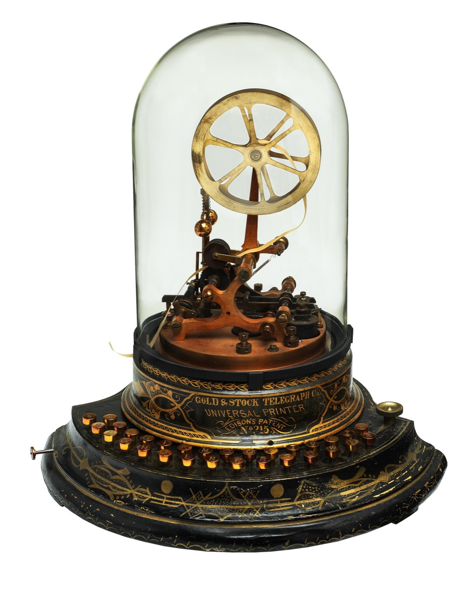

Market abuse, replayed
Twenty-five ways markets get abused, each played out step by step the way an alert sees it, with the safeguards that stop it and how I would build them.
- Re
- Order book, trade-based, price, information and customer patterns
- From
- Rahul Das, Compliance Technology Associate
- Note
- Every case is illustrative. Accounts and numbers are made up.
Pick a pattern
Red marks the account under review: its orders in the book, its trades on the chart and its lines on the tape.
| Bids | Price | Offers |
|---|
| Time | Account | Event |
|---|
Account under review
The rules
Red flags
How I work the alert
Data I pull
Safeguards, and how I would build them
| Safeguard | Layer | How I would build it |
|---|
Four layers of safeguards
No single control stops market abuse. Venues stop the worst of it in the matching engine, firms block risky orders before they leave, surveillance finds what got through, and supervision acts on it. Each replay above lists the controls at each layer for that pattern.
Exchange
Rules and matching engine controls the venue runs for everyone.
- Self-match prevention IDs
- Price bands, velocity logic, Limit Up-Limit Down and circuit breakers
- Message throttles and messaging efficiency programs
- Position limits and accountability levels
- Exchange and FINRA surveillance, CAT and Intermarket Surveillance Group data
Pre-trade
Checks inside the firm before an order reaches the market.
- SEC Rule 15c3-5 market access controls: credit, size, price and message limits
- Kill switches held by risk, not the trader
- Restricted lists, locates and position limit gates
- Pre-allocation and cross protocols in the order system
Surveillance
Alert models run on orders, trades and communications after the fact.
- Vendor platforms such as Nasdaq SMARTS, NICE Actimize, Eventus Validus and Scila
- In-house models on CAT, exchange audit trail and order system data
- E-communications surveillance on chats, email and voice
- Case management that keeps every alert and its outcome
Oversight
The people and procedures that make the alerts mean something.
- Written supervisory procedures under FINRA Rule 3110
- Annual testing under FINRA Rule 3120 and Rule 206(4)-7
- Personal trading, information barriers and training
- Model governance: documentation, tuning and validation
How I would put it in place
- Map risks to controls. List every product and pattern the firm is exposed to, then mark which layer covers each one. Gaps go to the top of the plan.
- Prove the data is complete. Reconcile order, trade and CAT data to the venues every day. Missing cancels or bad timestamps break spoofing and layering models first.
- Turn on the vendor models, then tune them. Start with the vendor's defaults, then set thresholds per product using each market's own depth, volume and volatility. One lot count never fits every contract.
- Test with known cases. Replay past enforcement cases and synthetic scenarios like the ones on this page. A model that cannot catch a textbook spoof will not catch a real one.
- Test below the line. Sample activity just under each threshold every quarter. If real issues sit there, the threshold is too high.
- Write the workflow. Set who reviews each alert, how fast, what evidence closes it and when it escalates to a case, a SAR or a referral.
- Govern the models. Document every rule, log every parameter change with its reason, and have the models validated independently each year.
- Report what it finds. Track alert volumes, close rates, escalations and time to close by pattern, and bring them to the compliance committee.
Where systems still fall short
Cross-product blind spots. Many firms still run equities, options and futures surveillance in separate tools, so a cross-market scheme shows up as three small alerts instead of one case.
Too many false positives. Most alerts close with no issue. Teams that never tune end up skimming, and the real case gets closed with the noise.
New markets. Crypto venues and prediction markets face the same patterns with less mature controls, often with no self-match prevention or consolidated audit trail.
Communications. Intent lives in chats and calls. Trade alerts that are never joined to communications miss the evidence that decides most spoofing and prearranged cases.
All 25 patterns
The whole set on one sheet. Open any row to replay it.

| Pattern | What it looks like | Main rules |
|---|---|---|
| Order book | ||
| Spoofing | Orders the trader never means to fill, placed to move the price toward a real order on the other side. | CEA §4c(a)(5)(C); CFTC Rule 180.1; CME Rule 575.A |
| Layering | Spoofing spread across several price levels on one side, to build fake depth and walk the price. | SEA §9(a)(2); SEA §10(b) and Rule 10b-5; FINRA Rules 2020 and 5210 |
| Quote stuffing | A flood of orders and cancels that slows other firms' market data, so the sender can trade on stale prices. | CME Rule 575.C; FINRA Rules 2010 and 5210; SEA §9(a)(2) |
| Momentum ignition | A burst of aggressive orders meant to set off other algorithms, then trading against the move they start. | CEA §6(c)(1) and CFTC Rule 180.1; SEA §9(a)(2); FINRA Rule 2020 |
| Trade-based | ||
| Wash trading | The same owner on both sides of a trade. Volume is printed, but no risk changes hands. | CEA §4c(a)(2)(A); CME Rule 534; SEA §9(a)(1) |
| Prearranged trading | Two parties agree the price and size off the market, then run the trade through the book to avoid competition. | CEA §4c(a); CME Rule 539; SEA §9(a)(1) |
| Painting the tape | A string of small trades between related accounts to show activity and a rising price on the tape. | SEA §9(a)(1) and §9(a)(2); FINRA Rules 2020 and 6140(b); CFTC Rule 180.1 |
| Money passing | Trades at off-market prices that move money from one account to another, often a client to an insider. | CEA §4c(a); CME Rules 534 and 539; NFA Compliance Rule 2-4 |
| Price and benchmarks | ||
| Marking the close | Buying or selling at the end of the day to set a closing price that values a bigger position. | SEA §9(a)(2); SEA §10(b) and Rule 10b-5; FINRA Rule 2020 |
| Pump and dump | Buying cheap shares, hyping the stock with false news, then selling to the buyers the hype brought in. | SEA §9(a)(2); SEA §10(b) and Rule 10b-5; Securities Act §17(a) |
| Short and distort | Shorting a stock, then spreading false bad news to push it down and cover at a profit. | SEA §10(b) and Rule 10b-5; SEA §9(a)(2); FINRA Rule 2020 |
| Corner and squeeze | Holding most of the longs and most of the deliverable supply, so shorts must buy back at a forced price. | CEA §6(c) and §9(a)(2); CFTC Rules 180.1 and 180.2; CME Rules 560 and 562 |
| Cross-market manipulation | Moving one market to profit in a linked one, such as pushing a stock to lift options or swaps on it. | SEA §9(a)(2); SEA §10(b) and Rule 10b-5; CFTC Rule 180.1 |
| Benchmark manipulation | Trading or colluding inside a fixing window to move a benchmark that prices billions in other contracts. | CEA §9(a)(2); CFTC Rules 180.1 and 180.2; Sherman Act §1 |
| Short selling before an offering | Shorting a stock in the five days before a priced offering, then buying shares in that offering. | Regulation M Rule 105; SEA §10(b) and Rule 10b-5 |
| Information | ||
| Insider trading | Trading on material non-public information, or passing it to someone who trades. | SEA §10(b) and Rule 10b-5; SEA §15(g); FINRA Rule 3110(d) |
| Front running | Trading ahead of a customer's large order the firm knows about, to profit from its price impact. | FINRA Rule 5270; FINRA Rule 2010; CME Rule 530 |
| Trading ahead of customer orders | The firm fills its own order at a price that should have filled a customer limit order it was holding. | FINRA Rule 5320; CME Rule 530 |
| Block trade information misuse | Using news of a pending block trade to trade ahead of it, or passing it to someone who does. | CME Rule 526; CFTC Rule 180.1; FINRA Rule 5270 |
| Customer and firm | ||
| Cherry-picking | An adviser waits to see how trades do, then gives the winners to itself and the losers to clients. | Advisers Act §206; Advisers Act Rule 206(4)-7; SEA §10(b) |
| Churning | A broker trades a customer's account too often, mainly to earn commissions. | FINRA Rule 2111; Reg BI, SEA Rule 15l-1; SEA §10(b) and Rule 10b-5 |
| Excessive markups | Charging a customer far above the prevailing market price on a principal trade. | FINRA Rule 2121; FINRA Rule 2124; MSRB Rule G-30 |
| Best execution failure | Routing customer orders where the firm benefits instead of where the customer gets the best price. | FINRA Rule 5310; Reg NMS Rules 605 and 606; Reg NMS Rule 611 |
| Naked short selling | Selling short without a locate, then failing to deliver and not closing out the fail on time. | Reg SHO Rule 203(b); Reg SHO Rule 204; SEA Rule 10b-21 |
| Free-riding | Buying in a cash account and paying for it with the proceeds of selling the same stock. | Reg T, 12 CFR 220.8(c); FINRA Rule 4210 |